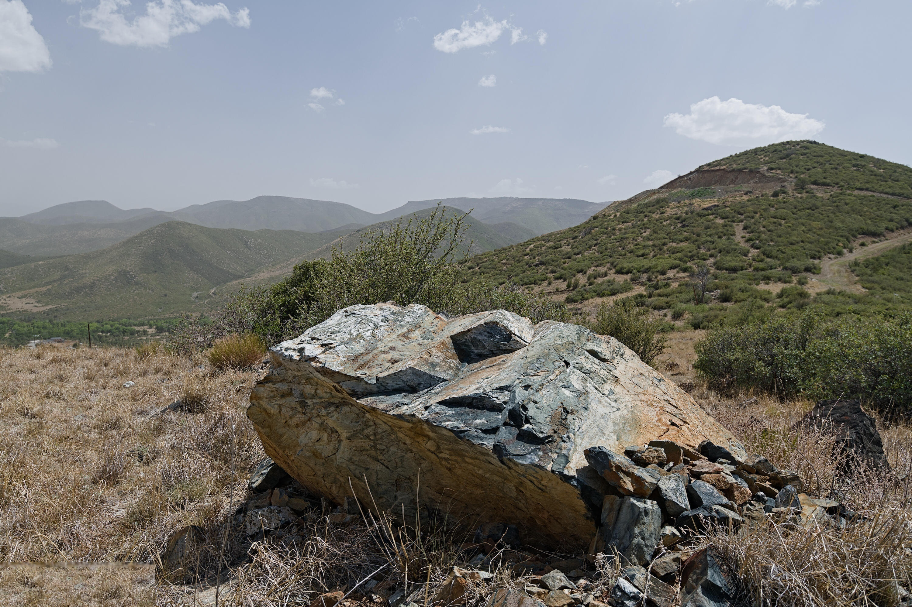

A private, gated community of large-acreage ranch properties in the foothills of the Bradshaw Mountains. Genuine Arizona ranch heritage. Minimum 9-acre lots. A lifetime away from the ordinary.
A rare combination of natural splendor, authentic ranch heritage, and the privacy that only large-acreage living can provide.
Secure gate access and minimum 9-acre lots ensure the kind of privacy that has become nearly impossible to find. Site-built homes only — a community built to last.
Perched at nearly 6,000 feet in the Bradshaw Mountain foothills, Goswick Ranch offers sweeping canyon vistas, year-round access to Prescott National Forest, and Big Bug Creek on the doorstep.
Bortle Class 3–4 skies mean the Milky Way is dramatically visible from spring through fall. No streetlights, no light dome — just the full Arizona night sky.
Goswick Ranch is carved from a historic working cattle ranch with deep Yavapai County roots. The Goswick family name has been part of this landscape since the 1800s.
RCU-2A zoning welcomes horses and livestock. Access hundreds of miles of equestrian trails in Prescott National Forest — your back gate opens to the Bradshaws.
Escape Phoenix heat at 6,000 feet. Real winters with snow, brilliant spring wildflower seasons, dramatic monsoon skies, and golden autumn — Arizona as it was meant to be lived.
Long before the subdivision was platted, this land was the Goswick Ranch — a working cattle operation that defined life in this corner of Yavapai County. The Goswick family's history here stretches back to the late 1800s, and that heritage is embedded in every street name, every stone wall, and every acre of the community today.
Street names like S Miners Pick Road and E Elizabeth Mine Road speak to the Big Bug Mining District that shaped this region. The historic buildings at the original Goswick Ranch headquarters still stand on Vaca Bonita Road — a tangible link to Arizona's frontier past.
Read the Full History
Goswick Ranch sits on Poland Road in Mayer, Arizona — one mile from town, yet a world apart. The Bradshaw Mountain foothills provide natural separation from the noise of modern life while keeping the necessities close.
Access governing documents, submit ARC applications, review community news and announcements, and connect with the Board of Directors.
Go to Resident PortalCurrent listings, community standards, HOA financial details, zoning information, and everything needed to present Goswick Ranch to qualified buyers.
View Buyer InformationPrescott National Forest begins at your back fence. Hundreds of miles of hiking, OHV, and equestrian trails are minutes away.
Direct access to the Bradshaw Ranger District with trails to summits topping 7,979 ft.
Prescott National Forest maintains an extensive equestrian trail network — bring your horses home.
Historic Crown King ghost town, Sedona red rocks, Jerome — all within a scenic hour's drive.
The Goswick Ranch HOA annual meeting date will be posted here as soon as the Board confirms the schedule. All owners are encouraged to attend. Watch this space or contact the Board.
Goswick Ranch encourages all property owners to maintain defensible space per Arizona's three-zone guidelines. Free risk assessments are available through Mayer Fire District at (928) 632-9534.
All owners are reminded that gate access is managed via the physical lockbox system. Please ensure guests are properly registered. Contact the Board with any gate concerns.
Whether you're an existing owner, a prospective buyer, or a realtor representing a client, the Goswick Ranch Board of Directors is here to help.
Reach the Board